观察如图3.6.9所示的三个角，哪个角最大？你能从比较线段长短的方法中得到启示吗？
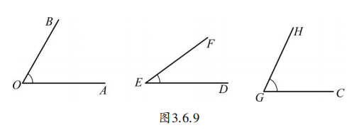
从上图我们可以发现， \(\angle DEF\) 明显比 \(\angle AOB\) 和 \(\angle CGH\) 小，但 \(\angle AOB\) 与 \(\angle CGH\) 的大小关系不太明显。那么如何比较，才能得到准确的结果呢？
你还记得比较两条线段长短的方法吗？类似地，你一定会想到可以采用下面的方法：如图3.6.10所示，把一个角放到另一个角上，使它们的顶点重合，其中的一边也重合，并使两个角的另一边都在重合的这一条边的同侧。这时，角的大小关系就明显了。
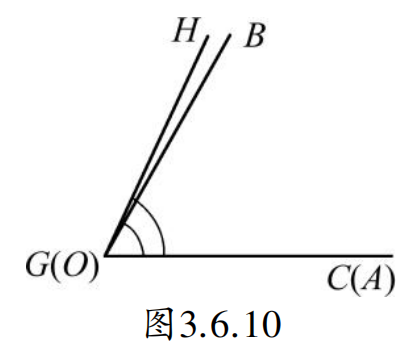
可以记为 \(\angle CGH > \angle AOB\) 或 \(\angle AOB < \angle CGH\)。比较角的大小，也可以用量角器分别量出角的度数，然后加以比较。
一副三角板上的角是一些常用的角，除了可以用它们直接画出 \(30^{\circ}\) 、 \(45^{\circ}\) 、 \(60^{\circ}\) 和 \(90^{\circ}\) 的角之外，还可以画出其他一些特殊的角。如图3.6.11所示，用两种方法放置一副三角板，可以画出 \(75^{\circ}\) 和 \(15^{\circ}\) 的角。
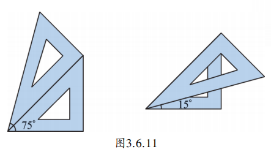
用一副三角板（30°、60°、90°、45°），你还可以画出哪些特殊的角？试试看！
除了15°和75°，还可以画出：
165°可以通过两个直角三角板把直角重合拼得，此时两个斜边相交的最大夹角就是165°。通过相加或相减，可以得到很多15°倍数的角。
由角的大小比较方法我们可以看到，角的大小与它的开口大小有关，开口越大，角越大；开口一样大，角就相等。前面我们曾用直尺和圆规准确地作出了一条线段等于已知线段，那么我们能否用直尺和圆规准确地作出一个角等于已知角呢？
在图3.6.12中， \(\angle 2 > \angle 1\) 。分别以两个角的顶点为圆心、相同长为半径作弧。可以发现， \(\angle 2\) 的开口大，圆弧长些，也就是说，圆弧与角两边的交点之间的线段也长些。从而想到，如果两个角中，所作圆弧与角两边的交点之间的线段相等，那么这两个角就应该相等。
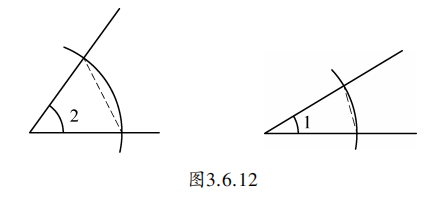
如图3.6.13， \(\angle AOB\) 为已知角，试用直尺和圆规按下列步骤准确地作一个角等于 \(\angle AOB\) 。
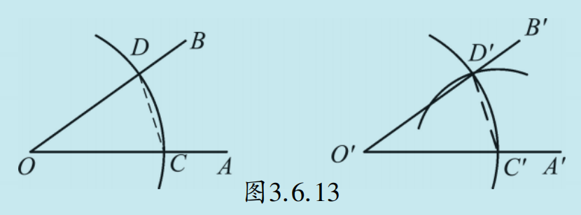
第一步：作射线 \(O^{\prime}A^{\prime}\)；
第二步：以点 \(O\) 为圆心、适当长为半径作弧，交射线 \(OA\) 于点 \(C\) ，交射线 \(OB\) 于点 \(D\)；
第三步：以点 \(O^{\prime}\) 为圆心、线段 \(OC\) 长为半径作弧，交射线 \(O^{\prime}A^{\prime}\) 于点 \(C^{\prime}\)；
第四步：以点 \(C^{\prime}\) 为圆心、线段 \(CD\) 长为半径作弧，交前一条弧于点 \(D^{\prime}\)；
第五步：经过点 \(D^{\prime}\) 作射线 \(O^{\prime}B^{\prime}\)；
\(\angle A^{\prime}O^{\prime}B^{\prime}\) 就是所要求作的角。
我们已经用直尺和圆规按一定步骤解决了如下两个作图问题：作一条线段等于已知线段；作一个角等于已知角。这里的“直尺”是一把没有刻度的直尺，“圆规”是一副可以“双腿”张开自如的圆规，它们可以用来作一些简单的图形。例如：过一点任作一条直线；过不同的两点作一条直线；以一点为圆心任作一个圆。如图3.6.14所示。
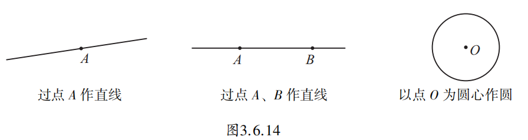
正是以这些基本作图为基础，我们作出了线段和角。人们将利用没有刻度的直尺和圆规这两种工具作几何图形的方法称为“尺规作图”。从古至今，众多数学家对于尺规作图有着极大的兴趣，对于哪些图形可以利用尺规作图作出、哪些图形又不可能利用尺规作图作出的思考和研究，推动了数学的发展。尺规作图是探索解决数学问题的有效工具。今后我们还将继续利用尺规作图解决其他的几何作图问题，直观地发现更多几何图形的内涵。
我们可以对角进行简单的加减运算，如：
\((1) \; 34^{\circ}34^{\prime} + 21^{\circ}51^{\prime} = 55^{\circ}85^{\prime} = 56^{\circ}25^{\prime};\)
\((2) \; 180^{\circ} - 52^{\circ}31^{\prime} = 179^{\circ}60^{\prime} - 52^{\circ}31^{\prime} = 127^{\circ}29^{\prime}.\)
观察图3.6.15中的 \(\angle AOC\) 、 \(\angle COB\) 和 \(\angle AOB\) ，如何表示它们之间的关系呢？我们可以用熟悉的“和差”来表示：\(\angle AOC + \angle COB = \angle AOB\)，或 \(\angle AOB - \angle AOC = \angle COB\)，或 \(\angle AOB - \angle COB = \angle AOC\)。可见，两个角相加或相减，得到的和或差也是角。
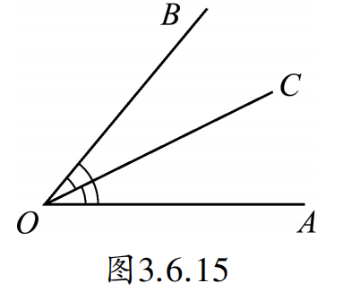
如图，拖动滑块改变 \(\angle AOB\) 的大小，观察角平分线 \(OC\) 始终将角平分。
从一个角的顶点引出的一条射线，把这个角分成两个相等的角，这条射线叫做这个角的角的平分线（angular bisector）。
已知 \(\angle AOB = 90^{\circ}\)，过点 \(O\) 任意作一条射线 \(OC\)，\(OM\) 平分 \(\angle AOC\)，\(ON\) 平分 \(\angle BOC\)。求 \(\angle MON\) 的度数。
※ 注：由于射线 \(OC\) 位置不确定，需要分类讨论。
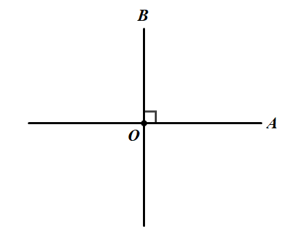
解： 需分四种情况讨论，具体如图：
情况一： 如图所示，当 \(OC\) 在 \(\angle AOB\) 内部时：
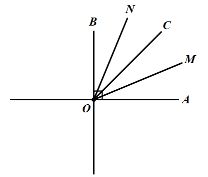
\(\begin{aligned} \angle MON &= \angle MOC + \angle CON \\ &= \frac{1}{2}\angle AOC + \frac{1}{2}\angle BOC \\ &= \frac{1}{2}(\angle AOC + \angle BOC) \\ &= \frac{1}{2} \times 90^{\circ} = 45^{\circ} \end{aligned}\)
情况二： 如图所示，当 \(OC\) 在区域二（靠近 \(OA\) 外侧）时：
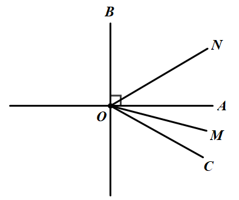
\(\begin{aligned} \angle MON &= \angle CON - \angle COM \\ &= \frac{1}{2}\angle BOC - \frac{1}{2}\angle AOC \\ &= \frac{1}{2}(\angle BOC - \angle AOC) \\ &= \frac{1}{2} \times 90^{\circ} = 45^{\circ} \end{aligned}\)
情况三： 如图所示，当 \(OC\) 在区域三（靠近 \(OB\) 外侧）时：
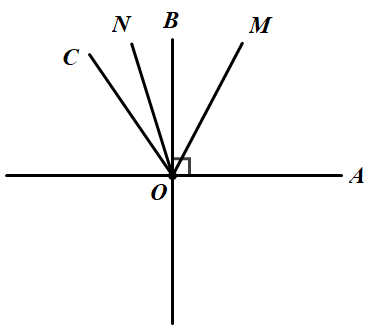
\(\begin{aligned} \angle MON &= \angle MOC + \angle CON \\ &= \frac{1}{2}\angle AOC + \frac{1}{2}\angle BOC \\ &= \frac{1}{2}(\angle AOC + \angle BOC) \\ &= \frac{1}{2}(360^{\circ} - 90^{\circ}) = 135^{\circ} \end{aligned}\)
情况四： 如图所示，当 \(OC\) 在区域四（与 \(OA\)、\(OB\) 均反向）时：
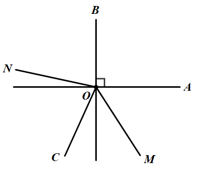
\(\begin{aligned} \angle MON &= \angle MOC - \angle CON \\ &= \frac{1}{2}\angle AOC - \frac{1}{2}\angle BOC \\ &= \frac{1}{2}(\angle AOC - \angle BOC) \\ &= \frac{1}{2} \times 90^{\circ} = 45^{\circ} \end{aligned}\)
结论： 当 \(OC\) 在情况三时，\(\angle MON = 135^{\circ}\)；其他情况均为 \(45^{\circ}\)。因此若没有图形，本题有两个答案；若有图形可根据 \(OC\) 位置确定唯一值。
如图，\(OM\) 是 \(\angle AOB\) 的角平分线，\(ON\) 是 \(\angle BOC\) 的角平分线。已知 \(\angle AOC = 120^{\circ}\)，\(\angle CON = 38^{\circ}\)，求 \(\angle AOM\) 的度数。
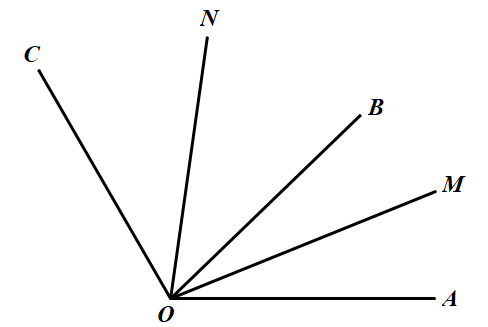
∵ \(ON\) 平分 \(\angle BOC\)，\(\angle CON = 38^{\circ}\)，
∴ \(\angle BOC = 2 \times \angle CON = 2 \times 38^{\circ} = 76^{\circ}\)。
∵ \(\angle AOC = 120^{\circ}\)，且 \(\angle AOC = \angle AOB + \angle BOC\)，
∴ \(\angle AOB = \angle AOC - \angle BOC = 120^{\circ} - 76^{\circ} = 44^{\circ}\)。
∵ \(OM\) 平分 \(\angle AOB\)，
∴ \(\angle AOM = \frac{1}{2} \times \angle AOB = \frac{1}{2} \times 44^{\circ} = 22^{\circ}\)。
结论： \(\angle AOM = 22^{\circ}\)。
1. 先观察下列各组角，其中哪一个角较大？然后用量角器量一量每个角，看看你的观察结果是否正确。
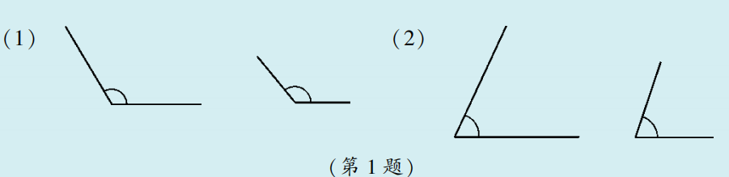
2. 请利用三角尺中的角估计下列角的度数，并按大小顺序用“>”号连接这四个角。
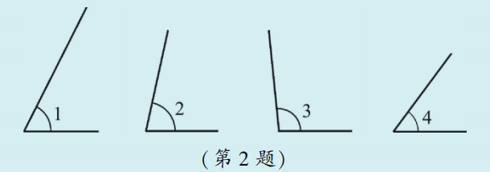
3. 如图，点 \(O\) 是直线 \(AB\) 上的一点， \(\angle AOC = 55^{\circ}\) 。画出 \(\angle BOC\) 的平分线 \(OD\) ，并计算 \(\angle AOD\) 的度数。
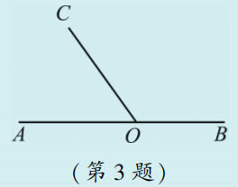
4. 已知 \(\angle AOB\) ，利用尺规作图作一个角，使它等于已知角的2倍。
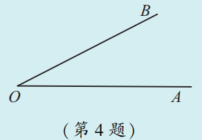
类比思想： 将角的大小比较与线段大小比较进行类比。
转化思想： 通过叠合法将角的大小比较转化为边的位置关系。
数形结合： 用角度数刻画角的大小，进行运算。
分类思想： 三角板拼角时考虑和与差两种情况，双角平分线问题需考虑射线位置分类讨论。
尺规作图是古希腊数学家的伟大创造，他们发现只用没有刻度的直尺和圆规，就能作出许多复杂的图形，如正五边形、正六边形等。著名的“几何三大难题”就是用尺规作图无法解决的三个问题，它们的探索推动了数学的发展。今天，尺规作图仍是训练逻辑思维和几何直观的重要工具。
✨ 从具体到抽象，用数学的眼光看世界 ✨